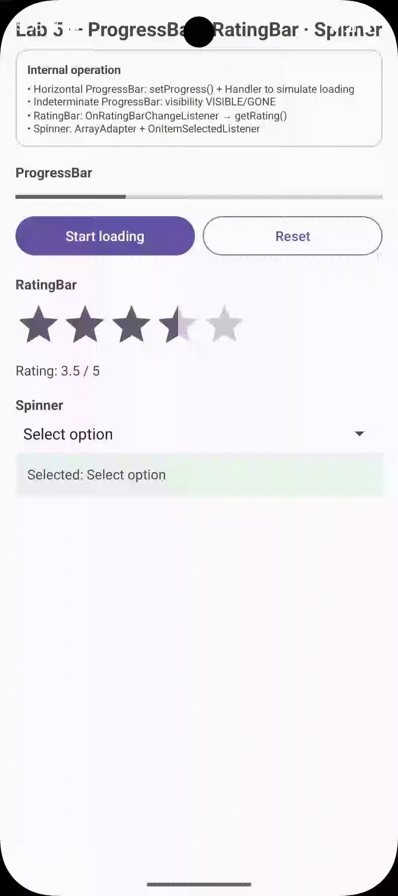
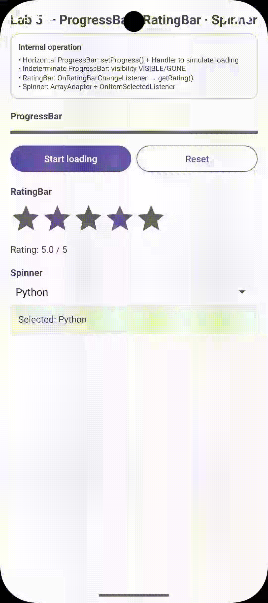

ProgressBar, RatingBar & Spinner Dropdown
Domina los tres mecanismos de feedback visual de Android: progreso determinista vs indeterminado con bucle en Handler, barra de valoración por estrellas con fromUser y menú desplegable Spinner
con ArrayAdapter.
2. Estados de la Interfaz
Haz clic sobre cualquier captura para abrirla en zoom interactivo a pantalla completa
ProgressBar horizontal
lab-feedback-progress.gif

RatingBar
lab-feedback-ranking.gif
Spinner dropdown
lab-feedback-spinner.gif

1. ProgressBar (Determinista vs Indeterminado)
Simulación de Tareas
El progreso se incrementa en el Main Thread mediante un Handler(Looper.getMainLooper()). Se debe llamar a removeCallbacks() en onDestroy() para prevenir memory leaks.
private final Handler handler = new Handler(Looper.getMainLooper());
private int progressStatus = 0;
private final Runnable progressRunnable = new Runnable() {
@Override
public void run() {
if (progressStatus >= 100) {
progressIndeterminate.setVisibility(View.GONE);
tvProgressResult.setText(getString(R.string.acfeed_progress_completed));
return;
}
progressStatus += 10;
progressBarHorizontal.setProgress(progressStatus);
tvProgressResult.setText(getString(R.string.acfeed_progress_current, progressStatus));
handler.postDelayed(this, 300); // Actualiza cada 300ms
}
};
@Override
protected void onDestroy() {
super.onDestroy();
handler.removeCallbacks(progressRunnable); // Evita fugas de memoria
}2. RatingBar con Detección fromUser
Calificación de Usuario
El parámetro booleano fromUser asegura que el Toast solo se dispare cuando el usuario toca las estrellas directamente, ignorando la
inicialización programática.
ratingBar.setOnRatingBarChangeListener((ratingBar, rating, fromUser) -> {
tvRatingValue.setText(getString(R.string.acfeed_rating_value, String.valueOf(rating)));
if (fromUser) {
Toast.makeText(this, getString(R.string.acfeed_toast_rating, String.valueOf(rating)), Toast.LENGTH_SHORT).show();
}
});3. Spinner con ArrayAdapter & Dropdown Style
Menú Desplegable
Uso de setDropDownViewResource(android.R.layout.simple_spinner_dropdown_item) para asegurar espacio táctil adecuado y accesibilidad.
String[] items = {
getString(R.string.acfeed_spinner_hint),
"Java", "Kotlin", "Dart", "TypeScript"
};
ArrayAdapter adapter = new ArrayAdapter<>(this, android.R.layout.simple_spinner_item, items);
adapter.setDropDownViewResource(android.R.layout.simple_spinner_dropdown_item);
spinnerTech.setAdapter(adapter);
spinnerTech.setOnItemSelectedListener(new AdapterView.OnItemSelectedListener() {
@Override
public void onItemSelected(AdapterView parent, View view, int position, long id) {
if (position > 0) { // Ignora el hint inicial
String selected = items[position];
tvSpinnerResult.setText(getString(R.string.acfeed_spinner_selected, selected));
}
}
@Override
public void onNothingSelected(AdapterView parent) {}
}); 4. Cómo llamar, manipular, sobrescribir y validar cada feedback
Feedback no es input de texto: es ProgressBar para progreso, RatingBar para valoración y Spinner para elección. Abajo, por cada uno, cómo
llamar, manipular, sobrescribir y validar/dar error.
API común (vale para los 3)
// Llamar (Java)
ProgressBar pb = findViewById(R.id.progressHorizontal);
RatingBar rb = findViewById(R.id.ratingBar);
Spinner sp = findViewById(R.id.spinner);
// Kotlin
val pb = binding.progressHorizontal
// Manipular - leer
int p = pb.getProgress(); // 0..max
float r = rb.getRating(); // 0..numStars
int pos = sp.getSelectedItemPosition(); // 0 = hint
Object sel = sp.getSelectedItem();
// Sobrescribir
pb.setProgress(70);
rb.setRating(4.5f);
sp.setSelection(2); // Kotlin
// Validar / dar error (no tienen setError, se usa Toast + TextView)
if (sp.getSelectedItemPosition() == 0) {
Toast.makeText(this, "Elige una opción", Toast.LENGTH_SHORT).show();
}
if (rb.getRating() == 0f) { /* pide valorar */ }Ciclo Handler (evitar leak)
Handler h = new Handler(Looper.getMainLooper());
Runnable r = () -> {
if (progress >= 100) {
h.removeCallbacks(this);
progressIndeterminate.setVisibility(View.GONE);
return;
}
progress += 10;
pb.setProgress(progress);
h.postDelayed(r, 300);
};
h.post(r);
@Override protected void onDestroy() {
super.onDestroy();
h.removeCallbacks(r); // obligatorio
}Sin removeCallbacks en onDestroy → leak si sales antes de 100%.
Por tipo de feedback
| Feedback | Llamar | Manipular | Sobrescribir | Validar / Error |
|---|---|---|---|---|
| ProgressBar horizontal / indeterminado |
findViewById(R.id.progressHorizontal) | getProgress()getMax()isIndeterminate() |
setProgress(70)setMax(100)setVisibility(VISIBLE/GONE)incrementProgressBy(10) |
if (progress==0) Toastno tiene setError() |
| RatingBar ratingBar |
findViewById(R.id.ratingBar) | getRating()getNumStars()isIndicator() |
setRating(4.5f)setNumStars(5)setStepSize(0.5f)setIsIndicator(true/false) |
if (fromUser && rating==0) Toastif (rating < 3) tv.setError |
| Spinner spinner |
findViewById(R.id.spinner) | getSelectedItem()getSelectedItemPosition()getAdapter() |
setSelection(2)setAdapter(new ArrayAdapter)setEnabled(false) |
if (pos==0) Toast "Elige opción"tvSpinnerResult.setText(...) |
Snippets copiables — manipular / sobrescribir / validar
// Java — por cada feedback
// ProgressBar
int p = progressBar.getProgress();
progressBar.setProgress(0);
progressBar.setMax(100);
progressBar.incrementProgressBy(10);
progressBar.setVisibility(View.VISIBLE); // indeterminado
progressBar.setVisibility(View.GONE);
// RatingBar
float r = ratingBar.getRating();
ratingBar.setRating(4.5f);
ratingBar.setIsIndicator(true); // solo lectura
ratingBar.setOnRatingBarChangeListener((bar, rating, fromUser) -> {
if (fromUser) {
tvRating.setText(getString(R.string.acfeed_rating, String.valueOf(rating)));
if (rating == 0f) {
Toast.makeText(this, "Valora al menos 1 estrella", Toast.LENGTH_SHORT).show();
}
}
});
// Spinner
int pos = spinner.getSelectedItemPosition();
String sel = (String) spinner.getSelectedItem();
spinner.setSelection(0); // vuelve a hint
spinner.setEnabled(false);
if (pos == 0) {
Toast.makeText(this, "Selecciona una tecnología", Toast.LENGTH_SHORT).show();
return;
}// Kotlin + ViewBinding — mismo, más corto
with(binding) {
// ProgressBar
val p = progressHorizontal.progress
progressHorizontal.progress = 0
progressHorizontal.max = 100
progressHorizontal.incrementProgressBy(10)
progressIndeterminate.isVisible = true
// RatingBar
val r = ratingBar.rating
ratingBar.rating = 4.5f
ratingBar.isIndicator = true
ratingBar.setOnRatingBarChangeListener { _, rating, fromUser ->
if (fromUser) {
tvRating.text = getString(R.string.acfeed_rating, rating.toString())
if (rating == 0f) Toast.makeText(this@FeedbackActivity, "Valora", Toast.LENGTH_SHORT).show()
}
}
// Spinner
val pos = spinner.selectedItemPosition
val sel = spinner.selectedItem as String
spinner.setSelection(0)
spinner.isEnabled = false
if (pos == 0) {
Toast.makeText(this@FeedbackActivity, "Selecciona", Toast.LENGTH_SHORT).show()
return
}
// Handler con coroutine alternativa
// lifecycleScope.launch { delay(300); progressHorizontal.progress += 10 }
}Sobrescribir sin parpadeo
setProgress() y setRating() son inmediatos. Para animar usa ObjectAnimator.ofInt(pb, "progress", 0, 100).
Dar error sin setError
Progress/Rating/Spinner no tienen setError(). Valida con if (pos==0) Toast + tvResult.setText(...) + Log.w.
fromUser
fromUser evita Toast al hacer setRating(3.5f)
programático en onCreate.